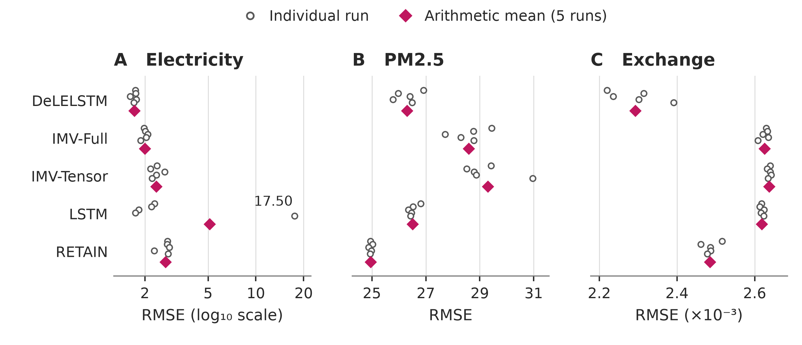
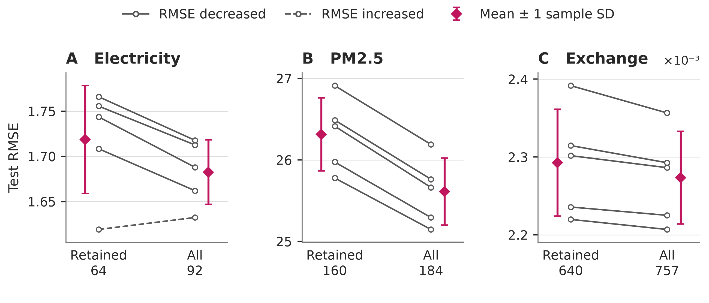

Exchange · overlapping dates
757 / 757
test windows shared at least one day with training.
A replication of DeLELSTM on three forecasting benchmarks
Eight rates enter at each step. The model weights each currency’s history and its latest change to predict the next Singapore rate.
PM2.5 example. Its mean instantaneous share fell from 60.3% at the first output to 2.3% at the last across five runs.
DeLELSTM led on Electricity and Exchange by mean root mean squared error (RMSE). RETAIN led on PM2.5.

| DeLELSTM mean RMSE | Electricity | PM2.5 | Exchange |
|---|---|---|---|
| Published → replicated | 1.7247 → 1.7185 | 26.612 → 26.3124 | 0.0023 → 0.002293 |
Each line follows one DeLELSTM checkpoint from the retained windows to the complete test set.

The Exchange score originally covered 640 of 757 windows. The complete-set mean is our reference for each dataset.
Two checks revealed where held-out observations entered the released evaluation.
test windows shared at least one day with training.
Only the training period sets the input scale. Validation chooses a checkpoint before the test period begins.
PM2.5. We carried the last available reading forward for inputs and scored only observed targets.
Within each fold, training, validation and testing shared zero source time points.
Exchange. We removed 29 window starts at each boundary.
PM2.5. The final test scored 3,964 of 4,026 targets.
Compare the mean test RMSE within each row. Each dataset uses its own target scale.
| Dataset | Random testAll windows | Later test periods | ||
|---|---|---|---|---|
| Period 1 | Period 2 | Period 3 | ||
| Electricity | 1.6825 | 1.6299 | 1.5753 | 1.9677 |
| PM2.5 | 25.6103 | 18.09 | 23.01* | 17.85 |
| Exchange | 0.002273 | 0.025994 | 0.008203 | 0.005136 |
* Two PM2.5 runs failed in period 2. Its mean uses 3 seeds. All other means use 5, giving 43 scored runs out of 45.
Only DeLELSTM was retrained. Test dates differ, and the random PM2.5 reference includes filled targets.
All three published RMSE winners recurred across 75 training runs.
Compared with the full random test, mean RMSE was lower in every PM2.5 period, higher in every Exchange period and mixed for Electricity.
Read a forecast score alongside its training dates, scored windows and observed targets.
DSC6013 · Group 17 · Option A